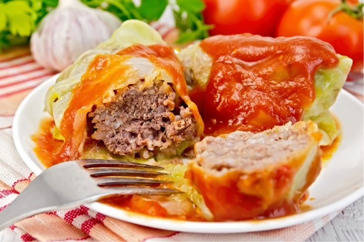

Stuffed Cabbage Rolls

Ingredients
- Large cabbage head
- 1.3 lbs minced meat
- 1 yellow onion
- 1 tablespoons chopped garlic
- 1/2 cup cooked rice
- 8-12 oz boullion
- Salt, Pepper to taste
Sauce
- 2 cups tomato puree
- 1 tablespoon flour
- Salt, Pepper, Sugar to taste
- 1 heaping tablespoon butter
Instructions
- Cook the rice. Chop onion and garlic in a pan and gently fry it. Allow to cool
- Hollow the cabbage, boil entire head in large pot for 10-15 minutes.
- Remove cooked cabbage, gently separate leaves - trim the ribs from each big leaf.
Place small or ripped leaves at the bottom of the large soup pot to avoid burning.
- In a large bowl mix meat, cooked inion and garlic, rice, with salt, pepper and marjoram.
- Put the stuffing on each cabbage leaf and roll them. Make sure they are tightly rolled. Place rolls in the large pot.
- Cover with boullion and simmer for 35-40 minutes.
- While the golabki are cooking, prepare the sauce. In a saucepan melt the flour into butter.
- Add a cup of boullion to the sauce. Bring to a boil. Add tomato puree and season to taste.